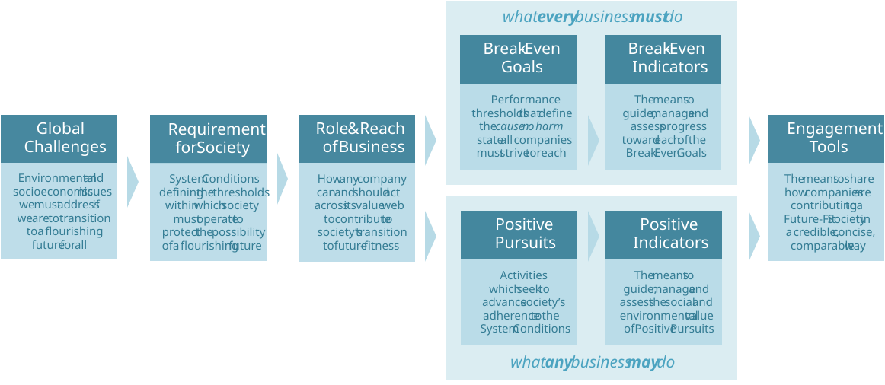
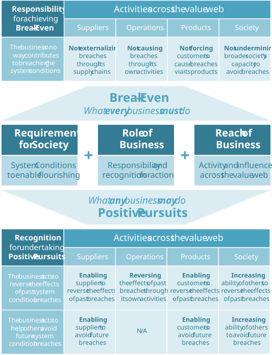
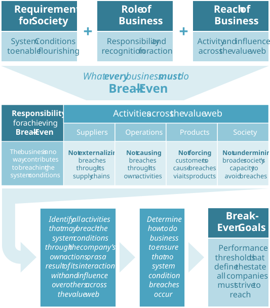
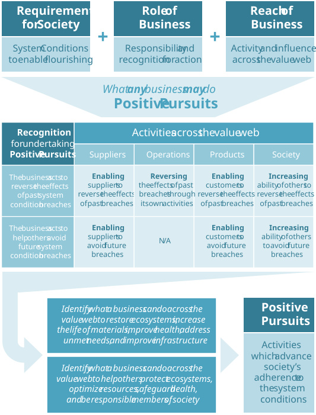

5. Actionable guidance for business
Peter Drucker
5.1 Toward Future-Fit Business
What should business do?
Many types of business – movie studios, fashion houses and ice cream vendors, to take a few examples – do not try to solve society’s biggest challenges. This doesn’t make them ‘bad’ or incompatible with a Future-Fit Society: many might say life would be dull without great films, fine clothes, and the occasional treat.
Other companies have business models which are more obviously aligned with meeting societal needs – such as food or pharmaceutical producers – but this doesn’t mean they are inherently ‘good’. Even if their products are beneficial, such companies may rely on many activities which exacerbate systemic problems.
What matters from a system perspective is that every company does nothing to undermine society’s transition:
A Future-Fit Business in no way undermines – and ideally increases – the possibility that humans and other life will flourish on Earth forever.
Developing actionable guidance.
As discussed in the previous chapter, this is about reaching a set of environmental and social thresholds that constitute the extra-financial break-even point for value creation, across the Triple Bottom Line. In this chapter we identify exactly what this looks like in a business context.
Any tool must be both useful and usable, and the Future-Fit Business Benchmark is no exception. To translate the requirements for society into actionable guidance for companies, it was necessary to answer two questions:
- The requirement for business: What do business leaders and investors need, if we are to equip them to rise to the challenge?
- The role and reach of business: What can – and what must – each company do, within and beyond its value web, to play its part in reaching a Future-Fit Society?
Each of these areas is now addressed.
5.2 The requirement for business
In theory, any company could take the requirements for a Future-Fit Society introduced above and deduce how its business needs to change. In practice, only the most progressive companies are likely to invest the effort required to figure out how to do this. Furthermore, the chances are that left to their own devices, any two companies – even within the same industry – would frame their ambitions and assess their progress in completely different ways.
This is not ideal: we have a common destination in mind – a Future-Fit Society – so why not track commitments and progress in the same way, too? In fact, there are four good reasons to do so:
Peer pressure drives progress.
While every business should remain focused on the destination, companies will always seek to understand what their competitors are doing – and may be spurred into raising their own game as a result. If everyone looks at progress in a similar way, it’s easier for a company to track how it is doing relative to its peers in pursuit of the right end goals.
Investors want to identify who the true leaders are.
The lack of comparability around corporate environmental and social targets makes it difficult for even the most diligent investor to determine which companies are doing most to prepare for systemic risks and open up new opportunities for growth. A concise, comparable, aggregable set of metrics, which frame short-term actions in the context of meaningful long-term ambitions, would solve this problem.
A holistic approach is needed to avoid unforeseen trade-offs.
As described in the role of every social system, there are many ways in which a company can have a positive impact, and any such efforts should be encouraged. That said, no attempt to ‘do good’ can justify a lack of necessary progress elsewhere, because positive and negative impacts almost never cancel out.5 A unified framing, which encompasses all possible positive and negative contributions to a Future‑Fit Society, can help to ensure that even the most focused company does not lose sight of the big picture.
Whatever positive impacts a company creates, it must become Future-Fit before it can claim with any confidence to be creating system value.
Equipping business leaders and investors with what they need.
The above considerations informed the pivotal phase in the Benchmark’s development: translating the concepts presented thus far into a set of Break‑Even Goals, Positive Pursuits, and complementary performance indicators (see Figure 5.1).
The next section describes the development methodology employed.
Figure 5.1: The anatomy of the Future-Fit Business Benchmark.

5.3 The role and reach of business
What every business must do, and what any business may do.
The FSSD system conditions introduced above offer a solid, science-based foundation for identifying what every company must do, as well as what any company may do beyond that.
A business will reach extra-financial break-even – and so become Future-Fit – only when its existence in no way contributes to breaches in the system conditions, within and beyond its own four walls.
In addition – and even before it becomes Future-Fit itself – a business may pursue positive outcomes that advance society’s own progress to future-fitness, by acting to overcome past system condition breaches, or by helping others to avoid future breaches.
The scope of business influence.
To understand what it means for a business to not contribute to breaches in the system conditions, we must be clear on the extent of a company’s potential to affect others.
Every business is just one actor in a complex and dynamic value web, influencing and influenced by a wide range of other social systems. We can segment the value web into four areas:
- Suppliers: This encompasses everyone involved in producing the inputs that the company depends upon, and anyone affected by those activities – including workers and communities throughout the company’s supply chains.
- Operations: The activities of the company itself, including the communities and workers that support them.
- Products: The revenue-generating goods and services offered by a company, and the individuals, companies, or other actors who benefit from or are affected by them.
- Society: Other organizations, physical infrastructure, and shared societal institutions which the company can influence and/or be influenced by.
This value web segmentation serves as the basis for determining two things. First, the extent to which a company should be held responsible for system condition breaches. Second, the degree to which a company may seek to have a positive impact – and be recognized for doing so – by reversing the effects of past breaches, or helping others to avoid future breaches.
These two complementary aspects to pursuing future-fitness – responsibility for eliminating negative impact, and recognition for positive impact – are summarized in Figure 5.2, and are described in depth below.
Figure 5.2: Mapping the Requirement for Society onto the Role and Reach of Business to identify what business can and must do with respect to the system conditions.

Business responsibility for negative impacts across the value web
Few would take issue with the notion that a company is responsible and wholly accountable for impacts within its direct control, such as those related to its day-to-day operations and the design of its products. However, from a systems perspective, a business is also mutually accountable for certain impacts outside its direct control:
A company is mutually accountable for any impact beyond its own four walls, to the degree to which that impact is a consequence of the company’s existence.
To identify the break-even point every business must reach, this definition of mutual accountability must be applied across all four areas of the value web.
Break-even in relation to suppliers.
No business can be Future-Fit if its success relies on using inputs which themselves cause system condition breaches. So mutual accountability here is about not externalizing breaches back through the company’s supply chains. The exact requirements vary, as follows:
Outsourced core functions: When a company outsources any activity that it would otherwise have to undertake itself (e.g. customer support, manufacturing, logistics) it also outsources all negative impacts associated with that activity. Hence a company is mutually accountable for avoiding or addressing all system condition breaches caused by the provision of its outsourced functions.
Product inputs: No company can produce physical goods – or offer services whose delivery involves the consumption of such goods – without relying on raw materials, manufactured parts, etc. Hence mutual accountability demands that a company works to avoid or address all cradle-to-gate impacts caused by the provision of its product inputs.
Ancillary goods and spend: This encompasses three types of purchase. First, services that a company uses from time to time (e.g. consultancy, taxis, flights and hotels for business travel). Second, general goods consumed in the course of day-to-day operations (e.g. office supplies, cleaning products). Third, purchased or leased capital assets that support day-to-day activities (e.g. buildings, IT equipment, machinery, furniture). A company can generally source such inputs on a like-for-like basis from a range of suppliers, but its influence over any one of them is likely to be negligible. In this case, mutual accountability extends to selecting the best option available.
Today’s global supply chains can be highly complex and opaque. Traceability of business inputs – and their resulting impacts – is thus a significant challenge. However, ignorance is no defence, and a company is wholly accountable for doing all it can through its procurement practices to continuously anticipate, avoid and address supply chain hotspots, until the above requirements are met.
Break-even in relation to operations.
A company is wholly accountable for eliminating negative environmental and social impacts caused by its own activities, and that extends to the actions of its workers. It is not possible to completely control the actions of individual employees, but a company must do all it can to anticipate and avoid problems, and to address any issues effectively when they do arise.
Break-even in relation to products.
A company must do all it can to ensure that the goods and services it offers do not harm people or the environment, but it cannot be expected to exert complete control over its customers’ actions. So a company is deemed to be mutually accountable for unavoidable or likely and foreseeable impacts resulting from the use and (in the case of physical goods) post-use processing of its products.
For example, if a company sells a car powered by an internal combustion engine, then – because the driver has no choice in the matter – the company is mutually accountable for the greenhouse gases that the car emits during use. If a company sells an electric car, then the driver is free to use renewable sources of electricity to charge the battery. In this case the company is not mutually accountable for any greenhouse gas emissions that occur (during electricity generation) if the customer uses a carbon-emitting source of electricity.
Break-even in relation to society.
A company must behave ethically, and must in no way – through either action (such as lobbying against progressive legislation) or inaction (such as failing to pay sufficient taxes) undermine the integrity of the societal institutions and physical infrastructure we all rely on.
A company is also mutually accountable for the impact of its financial assets. Every organization is constrained in its actions by its access to capital, and companies have the power to provide such access, in the form of investments or loans. Business must do all it can to ensure that it does not financially support any activity whose success depends on breaches to the system conditions (e.g. providing project finance to build coal-fired power stations).
Business recognition for positive impacts across the value web
Recall that a company may pursue positive outcomes either by acting to overcome past breaches to the system conditions, or by helping others to avoid future breaches. Again, we look at all four areas of the value web in turn.
Positive Pursuits in relation to suppliers.
As explained above, a company cannot be considered Future-Fit with respect to its suppliers until it has effectively avoided or addressed all negative impacts that occur within its supply chains.
Attaining this level of performance – particularly for product inputs with complex, multi-layered supply chains – may take significant time and effort.
However, there is a big difference between waiting for a supply chain to improve, and actively intervening to improve it. Hence any action a company takes to enable a supplier to reach break‑even constitutes a Positive Pursuit.
For example, a company sourcing an agricultural input from a water-stressed region may offer financial assistance and/or expertise to help suppliers install drip irrigation technology, thus radically reducing the input’s water footprint.
A company may also pursue positive outcomes by helping suppliers to reverse past environmental impacts (e.g. by restoring previously-felled forests), or increasing economic opportunity among underserved groups (e.g. by enabling access to commodities markets for smallholder farmers in remote areas).
Positive Pursuits in relation to operations.
A company has complete control over its own operational activities, so gradual reduction of its own negative impacts toward break-even do not count as a Positive Pursuit.
However, a company may achieve positive outcomes through its own activities if it goes beyond break-even, and begins to reverse environmental impacts (e.g. by generating more renewable energy than it needs, and offering the surplus back to the grid), or if it increases social inclusion by actively seeking to employ people from underserved groups.
Positive Pursuits in relation to products.
A company may achieve a positive outcome by enabling its customers to eliminate their own negative impacts (e.g. by vastly reducing their need for fossil fuels or fresh water) – or even to have a positive impact themselves.
Note, however, that it is difficult to assess with any confidence – or credibility – the positive impact a product has, because the benefit accruing from its use depends on the other options available. Consider, for example, a highly efficient but gasoline-powered SUV. If a customer were to buy such a vehicle to replace a more efficient compact car, the net change in green-house gas emissions would be worse.
The case may be stronger when it comes to products that completely eliminate a negative impact – if the new SUV was powered only by electricity, for example. Even then, what if a customer could have met their transport needs using more energy-efficient public transit?
There are no easy answers – and even the most well-meaning business may end up being accused of greenwashing if its claims of positive impact are overblown.
There are, however, two ways to increase the chances that products really will have a measurable positive impact. The first is to offer goods or services whose use actually reverses past environmental impacts (e.g. technology to clean up polluted rivers). The second is to enable underserved groups to meet their basic needs (e.g. by providing clean energy or affordable healthcare to the rural poor), thus overcoming barriers to social inclusion and wellbeing.
Positive Pursuits in relation to society.
As noted in the economic context, there is no magic button we can press to reorient our economic system in pursuit of future-fitness. But a new growth paradigm can emerge if we work together to transform social norms, global governance, shared infrastructure, and market mechanisms.
Any company may actively contribute to this shift, through the application of its corporate and/or brand influence, its core competencies and technical know‑how, and how it chooses to invest its financial capital.
5.4 Deriving the Break-Even Goals, Positive Pursuits, and Indicators
5.4.1 Break-Even Goals
Break-Even Goals were formulated to give business leaders a clear destination to aim for, such that:
- Each goal is expressed as a single sentence, whose meaning can be grasped by business leaders, investors and other key stakeholders without lengthy explanation.
- Each goal represents the minimum level of performance to aim for in one part of the value web (e.g. products, operations) and relates to one issue (e.g. wages, waste).
- All goals together identify the social and environmental break-even point that every company must reach.
To derive these goals, it was first necessary to examine all of the ways in which a company could breach the system conditions – and thus slow down progress toward realizing the Properties of a Future-Fit Society (Figure 4.2).
The next step was to identify what behaviours would have to be in place to ensure that such breaches would not occur. Finally, these behaviours were translated into a set of clear, concise Break-Even Goals. Figure 5.3 summarizes this process, and details of the mapping can be found in Appendix 2. The goals themselves are presented in the next chapter.
Figure 5.3: How the Future-Fit Break-Even Goals were derived.

5.4.2 Break-Even Indicators
Business leaders need to monitor performance and prioritize where action is most needed. Furthermore, investors and other stakeholders need to make meaningful comparisons across companies, to understand who is leading the pursuit of future-fitness. Hence we need a consistent way to assess progress toward each Break-Even Goal.
Design criteria for indicators.
In developing the indicators, the following design criteria were employed:
Calculable…
- All data required to compute an indicator’s value should be within the company’s power to obtain, even if some companies may not be capturing it already.
- Each indicator should be calculable, even if a company does not know everything about its impacts(e.g. it may not know the source of a purchased material, or the emissions of a particular site). So indicators must accommodate knowledge gaps.
- Each indicator should encourage a company to close its knowledge gaps, and so it should never penalize increased knowledge (e.g. finding out that a particular product has a negative impact should not improve the company’s score, but neither should it be reduced).
Comparable…
- Each indicator should measure performance consistently across any company, regardless of its size, sector or location.
Complete…
- The indicators should cover the full scope of a company’s responsibility, encompassing all relevant activities undertaken by or on behalf of the business, across the value web.
Concise…
- Each indicator should capture performance in the context of whichever entity is most relevant to the goal (e.g. per product, or per employee). This ensures that the company is able to identify where action is most needed.
- Each indicator should aggregate per‑entity metrics into one value (or as few as possible, if a single value would not be meaningful) which represents the company’s overall progress. Furthermore, the performance of each entity should be weighted in accordance with its overall contribution to the business.
- At both the micro (per-entity) and macro (company-wide) levels, it should be possible to express progress toward break-even as a percentage.
Credible…
- Each indicator should build on leading science, and accurately capture the ‘spirit’ of the goal it seeks to measure progress toward.
- Each indicator should draw on best-available third-party resources, such as independent industry standards, insofar as they exist and align with the required level of performance.
Evolution of the Indicators
A first set of Break-Even Indicators was presented in Release 1. Like the Break‑Even Goals, these have been refined with early adopters.
One major improvement is that each goal is now supported by both progress and context indicators. The intent is not to burden companies with even more things to measure, but rather to help them put their progress in context, to give a better sense for how well they are optimizing resources, and how far away they are from reaching break-even.
Consider, for example, the goal Water use is environmentally responsible and socially equitable. There are two aspects to this, relating to both quantity and quality. First, a company must reduce and eventually eliminate its water consumption from water-stressed regions. Second, it must ensure that any discharges do not degrade the quality of the receiving water body or soil, and do not cause harm in any other way. To present the full picture, the goal is accompanied by four indicators: two progress indicators to capture fitness as a percentage for both consumption and discharge, and context indicators for each to record the total amount of water consumed and discharged respectively.
Note that in keeping with the Concise… design criterion, additional indicators are employed only if they help to inform better business decisions.
For more information on the Break-Even Indicators, see the Action Guides.
5.4.3 Positive Pursuits
Positive Pursuits were formulated to help business leaders actively contribute to society’s future-fitness, such that:
- Each Positive Pursuit is expressed as a single sentence, whose meaning can be grasped by business leaders, investors and other key stakeholders without lengthy explanation.
- Each Positive Pursuit identifies a way either to reverse the effects of negative environmental or social impacts that occurred in the past, or to help others avoid having such negative impacts in the future.
- Each Positive Pursuit relates to one type of intended outcome which can be delivered acrossthe value web, and so encompasses a range of possible actions – from improving supplier performance, to offering beneficial products, to strengthening the abilities of markets and institutions to pursue future-fitness.
To derive these Positive Pursuits, it was first necessary to examine how a company could act to overcome past breaches to the system conditions, or help others to avoid future breaches – and thus speed up progress toward realizing the Properties of a Future-Fit Society (Figure 4.2).
The next step was to group these behaviours into a clear and concise set of outcomes which a company may seek to deliver. Figure 5.4 summarizes this process, and details of the mapping can be found in Appendix 2.
Figure 5.4: How the Future-Fit Positive Pursuits were derived.

5.4.4 Positive Indicators
There are a potentially infinite number of ways in which a company can undertake a Positive Pursuit. For example, ensuring More people are healthy and safe from harm by reducing the impact of diabetes among the world’s poorest people might be tackled by educating people on healthy eating choices, providing access to affordable insulin, or training healthcare professionals to spot and treat the disease before symptoms escalate.
This diversity of approach means it can be challenging to assess and report on any two projects in a consistent and comparable way. But striving to do so is important, both to inform future project decisions, and to present results to investors and others in a meaningful way.
The need for a common way to describe impact led to the formation of the Impact Management Project (see box).
Future-Fit Foundation is a contributing author to the IMP, and our approach to assessing positive outcomes draws significantly on their work. We are committed to refining our guidance in line with this cross-sector initiative, as it continues to evolve. For further details see the Positive Pursuit Guide.
Introducing the Impact Management Project (IMP)
Between 2016 and 2018, the IMP brought together over 2,000 practitioners from across geographies and disciplines, to arrive at a consensus on how to talk about, manage and measure impact – bridging the perspectives of business, non-profits, investment, social science, grant-making, evaluation, policy, standards bodies and accounting. This diverse group arrived at a shared definition of “impact”, and agreed on the types of data one would expect to find in any good impact framework or report. [18]
Bibliography
Greenhouse gas emissions are the notable exception: a kilogram of CO2 emitted in one part of the world can be ‘cancelled out’ by another drawn down out of the atmosphere elsewhere.↩︎